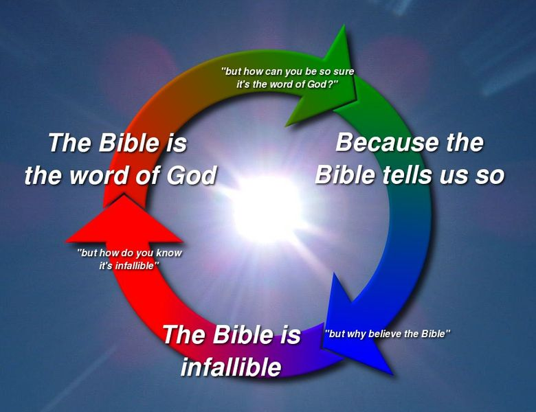
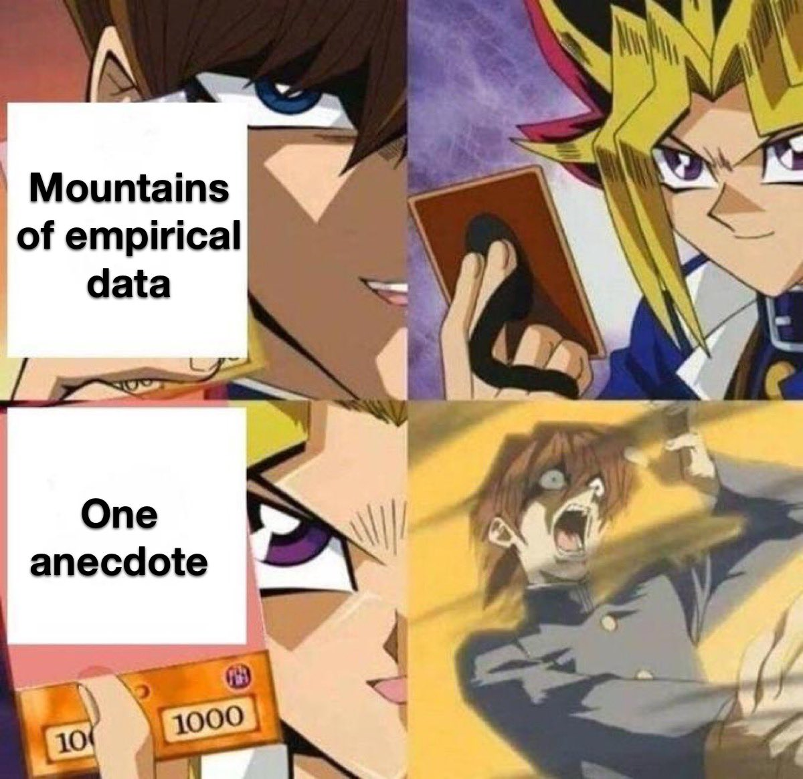
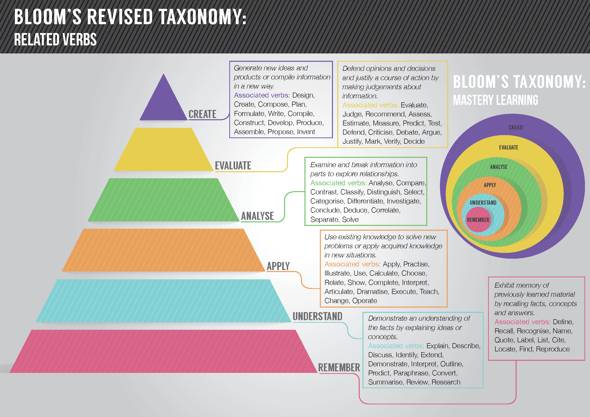
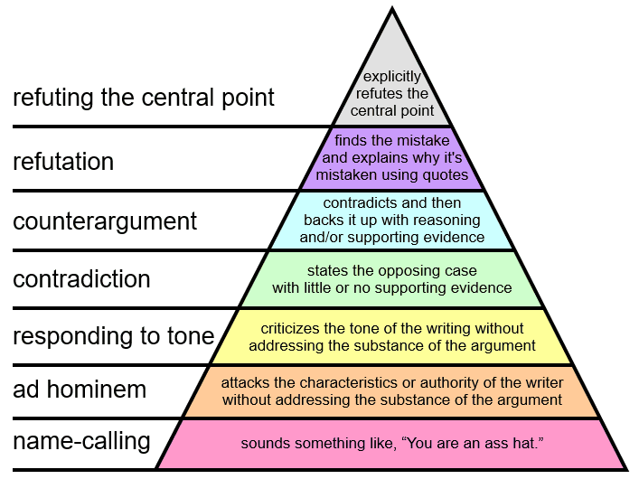
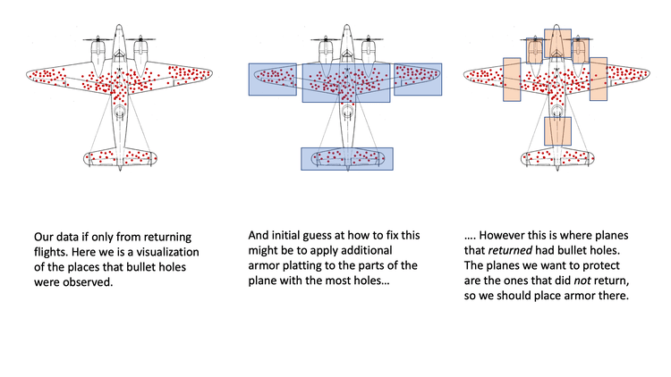
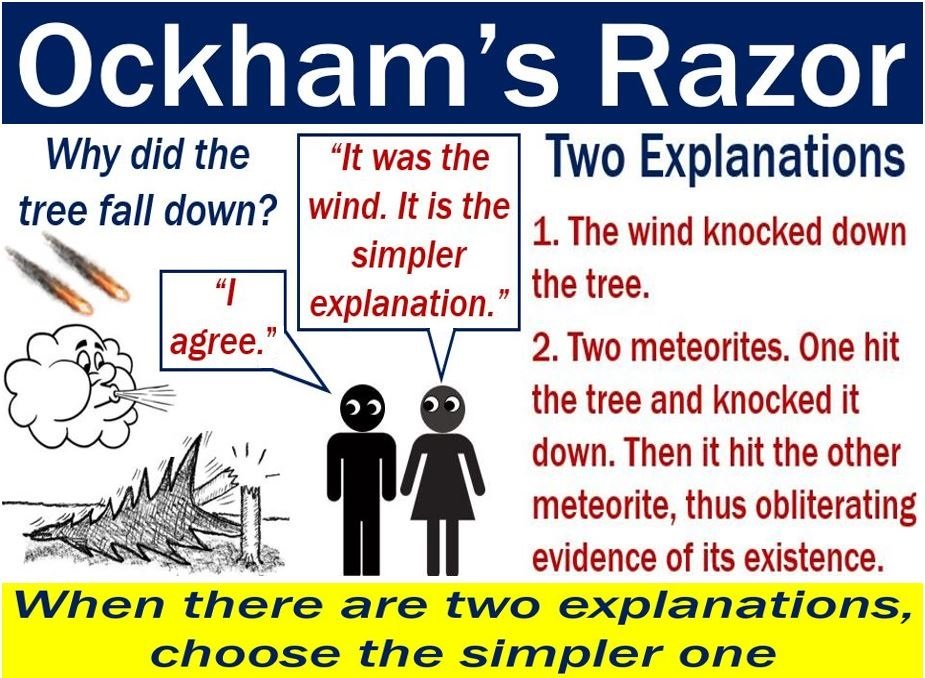

Formal Logic, Contradictions, Fallacies, and Biases
Table of Contents
- 1. Summary Of Formal Logic
- 2. Distinguishing Between Different Types Of Contradictions
- 3. Properties of Premises
- 4. Statistical Reasoning Skills
- 5. Fallacies
- 6. Bloom’s Taxonomy
- 7. Graham’s Hierarchy Of Disagreement
- 8. Question Evasion Techniques
- 9. Cognitive Biases
- 10. Rational Ignorance
- 11. Heuristics
- 12. Proofs
Note: I haven’t finished writing this file yet. It takes time to write stuff.
1. Summary Of Formal Logic
- Logical Operations, Logic Symbols, Differences and Contexts with Natural Languages like English
- Truth Tables, Order of Operations
- Logical Forms
- Conditions, Converses, Inverses, Contrapositives
- Logical Quantifiers
- DeMorgan’s Laws, DeMorgan’s Laws for Quantifiers
- Tautologies, Contradictions
- Inference Rules, Latin Terminology
- Invalid Logical Arguments
- Usage of NAND and NOR to create all other logical statements
We recommend reading forall x: Calgary for an introduction to classical logic.
2. Distinguishing Between Different Types Of Contradictions
- An ordinary contradiction
- A performative Contradiction
- Circular reasoning (a circle of contradictions)
3. Properties of Premises
3.1. Necessary Condition
- Q is true only if P is true.
- ’P is necessary for Q because P being true is needed for Q to be true’
3.2. Sufficient Condition
- If R is true, then S is true.
- ’R is sufficient for S because R is all you need to get S’
- ’R is enough to get S’
3.3. Conditions Possibilities
Any Condition Has Four Possibilities:
- Necessary & Sufficient [1]
- Not Necessary & Sufficient [2]
- Necessary & Not Sufficient [3]
- Not Necessary & Not Sufficient [4]
| Necessary | Not Necessary | |
|---|---|---|
| Sufficient | [1] | [2] |
| Not Sufficient | [3] | [4] |
3.4. Intrinsic and Instrumental Value
3.5. Normative And Descriptive Claims
3.5.1. Descriptive Claims
- Are statements that describe something.
- They express an understanding of how something is or could be.
- They don’t make evaluations.
3.5.2. Normative Claims
- Are statements that express an evaluation or judgment.
- Are often implicit.
- Relative to a standard or ideal.
- Words that are commonly associated with normative claims are: should, shouldn’t, right, wrong, and many more.
4. Statistical Reasoning Skills
4.1. Bayes’ Theorem
4.2. Correlation & Causation
- Positive Correlations: When events frequently occur together.
- Negative Correlations: The occurrence of one event makes it unlikely that the other event will not occur.
- Correlation ≠ Causation: Alternative explanations include common/alternative causes and coincidences.
Facts about Correlation & Causation
- Correlation is correlated with causation.
- Causation causes correlation.
4.3. The Conjunction Fallacy
4.4. Type I And Type II Errors
Every hypothesis test has four possible outcomes:
| Decision | H0 is True | H0 is False |
|---|---|---|
| Fail To Reject H0; Reject HA | Correct | Type II Error |
| Reject H0; Choose HA | Type I Error | Correct |
- Type I Errors (False Positives) occur if the Null Hypothesis is rejected when it is actually true.
- A False Positive is a result that wrongly indicates that a given condition exists when it actually doesn’t (the positive result is actually false).
- Type II Errors (False Negatives) occur if we fail to reject the null hypothesis when it is actually false.
- A False Negative is a result that wrongly indicates that a given condition does not hold when it actually does (the negative result is actually false).
- ’Fail to Reject’ the Null Hypothesis is used instead of ’accept’ because there is still a small probability (β) that it could be wrong.
- α (level of significance) is the probability of making a Type I Error, if the Null Hypothesis is true.
- The reason why this is the case is because α is a probability that makes up one tail of the curve, the other, or both simultaneously.
- If the null hypothesis is true, it’s still possible to get values for the mean that are located in those tails, but i
4.4.1. Alternate Table In Terms Of True/False Positives/Negatives
Every hypothesis test has four possible outcomes:
| Decision | H0 is True | H0 is False |
|---|---|---|
| Fail To Reject H0; Reject HA | True Negative | False Negative |
| Reject H0; Choose HA | False Positive | True Positive |
4.5. Understanding Regression to the Mean
Regression to the Mean: Blithering Genius explains that Regression to the Mean does not imply that selection is always reversed. Regression to the Mean is a statistical effect due to the removal of sample bias.
Regression to the Mean: Veritasium explains what Regression to the Mean is, and how many statistical studies don’t account for it, thus contributing to the abundance of fake academic research.
5. Fallacies
- Formal fallacies are defects in the logical forms of arguments, not the content.
- Informal fallacies are defects in the content of arguments, not the logical forms. These occur when the premises do not support the conclusion.
- The Fallacy Of Composition arises when we assume that the whole has the same properties as its parts. It is an informal fallacy.
- The Fallacy Of Division arises when we assume that the parts of some whole have the same properties as the whole. It is an informal fallacy, and it is the opposite of the fallacy of composition.
5.1. Ad Hominem Fallacies
Ad Hominem Fallacies are fallacies that attack the person making the argument instead of the argument itself.
- Abusive Ad Hominem: Attacks the speaker directly.
- Guilt By Association: Whenever one tries to argue against a certain view by pointing out that some unsavory person is likely to have agreed with it. Example: Nazis drank water, but that doesn’t mean that water is bad.
- Genetic Fallacy: Condemns the origin of a claim instead of the claim itself. Alternatively, the origins of a claim may be used to wrongly support the claim instead of giving valid reasons to support it instead.
- Circumstantial: Claims that the speaker is only advancing the argument to advance their own interests (attacking the speaker’s circumstances instead).
- Tu Quoque: Accuses a person of acting in a manner that contradicts some position that they support, and concludes that their view is worthless. Although pointing out hypocrisy (tu quoque) and conflicts of interest (circumstantial ad hominems) don’t attack the arguments directly, they are still worth pointing out. If the opponent can’t defend their apparent hypocrisy, then they have a contradiction. And if they have a conflict of interest, then the argument should probably be evaluated by someone with no conflict.
5.3. Appeal to the People
Establishes the truth of some claim P on the basis that a lot of people believe P to be true.
Note: It’s not possible to make an Appeal to the People Fallacy when dealing with emotional/value knowledge, since that knowledge is supposed to be subjective and can be based on popular consensus.
5.4. Begging the Question
When trying to understand the why the logical form of circular reasoning is invalid, recall that a false statement implying a chain of false statements does not generate a true statement. So although F -> F is T on the truth table when evaluating conditionals, true statements cannot be generated from false statements when making arguments.
It can be particularly difficult to catch circular reasoning fallacies since all the statements in the fallacy give coherence to each other, albeit in an illegitimate way.

5.5. Category Errors
5.6. False Equivocation
The usage of the False Equivocation Fallacy seems to be strongly affected by the Sapir-Whorf Effect.
Note: Analogies are very susceptible to false equivocation fallacies.
People use analogies so often to convey their political ideas, whatever they are. This is a primary reason why False Equivocation Fallacies are so common in political rhetoric. People often use analogies to convey their ideas without checking (or even realizing) that all the necessary conditions for a valid comparison are meant.
5.7. Anecdotal

5.8. Slippery Slope
Once one event occurs, other related events will follow, and this will eventually lead to undesirable consequences. Examples of the Slippery Slope Fallacy in Politics:
- Gay Marriage will lead to polygamy, incest, and beastiality
- First someone might start doing tobacco, then they’re start doing cannabis, and then before they know it, they’re being doing methadone too.
- Today’s jay walker and litterer will be tomorrow’s thief and window breaker.
- If we let one Nazi speak freely, then soon we’ll have a second Holocaust.
- Socialism is just a gateway into communism.
Note: Arguing against gun control laws and more government regulation is not a slippery slope fallacy because more gun control laws and more government regulations are still being proposed. For many leftists, the US will never have enough gun control unless it completely bans guns.
5.9. Appeal to Consequences
The Appeal to Consequences Fallacy occurs when someone is assuming that the conclusion is bad, without honestly assessing and justifying whether the conclusion is really bad or not.
Example: Someone argues that abortion is bad because it counts as “eugenics”, but they never evaluated whether eugenics is actually a bad thing or not. This has the following logical form:
- Abortion -> Eugenics
- Eugenics is bad.
_ _ _ _ _ _ _ _ _ _ _ _ _
Conclusion: Abortion is bad (because it entails eugenics).
Appealing to Nature regarding the intrinsic selfishness and intrinsic violence of life is not an appeal to consequences. It’s just Nature, and nothing can really be done to change the way it is.
Note: I’m skeptical that Appeal to Consequences is a real fallacy in many cases since we always (inevitably) have to appeal to the consequences on literally everything when arguing in favor of what we believe would be “best”.
6. Bloom’s Taxonomy

7. Graham’s Hierarchy Of Disagreement

Citation: Graham’s Hierarchy of Disagreement, under CC BY-SA 3.0, by Loudacris.
{kind=link}
8. Question Evasion Techniques
Question Evasion Techniques are various techniques that people will use to avoid questioning their beliefs and worldview:
- Ignoring the question
- Acknowledging the question without answering it
- Questioning the question by:
- requesting clarification
- reflecting the question back to the questioner, for example saying “you tell me”
- Attacking the question by saying:
- “the question fails to address the important issue”
- “the question is hypothetical or speculative”
- “the question is based on a false premise”
- “the question is factually inaccurate”
- “the question includes a misquotation”
- “the question includes a quotation taken out of context”
- “the question is objectionable”
- “the question is based on a false alternative”
- Attacking the questioner
- Declining to answer by:
- refusing on grounds of inability
- being unwilling to answer
- saying “I can’t speak for someone else”
- deferring answer, saying “it is not possible to answer the question for the time being”
- pleading ignorance
- placing the responsibility to answer on someone else
- Attacking the questioner
- Tactical Nihilism
8.1. Tactical Nihilism
Tactical Nihilism: A bad-faith debating tactic where the debater selectively rejects commonly understood concepts, systems of classification, or terminology used by their opponent, halting any substantive debate, but supports their own viewpoints using those same concepts.
Instead of evaluating the logic of an opposing argument, the tactical nihilist will feign confusion, and attack a term used by their opponent. If the opponent, unaware of the tactic, takes the debater’s apparent confusion in good faith, the conversation is quickly derailed into long discussions where the debater will continually request more and more evidence simply to establish the term’s definition or validity, which the debater really understood in the first place. The debater will split every hair, attempt to deconstruct other words and concepts, and request more evidence. The original argument is forgotten and appears to be unaddressed by the opponent, and the debater is then able to feel victorious. Example:
Alice: White people, becoming a dwindling and hated minority in the United States, face challenges as a group and should be allowed to advocate for their interests as a race.
Bob: Race? What even is that, really? And what is white? What about Italians and the Irish? I don’t even know what you’re talking about.
Alice: Wait, you support black, Hispanic and Asian minority activism. You know what race is, and I’ve never heard you try to deny or deconstruct any of those other racial identities before. And you sure seem to know what white people are when you’re attacking them for white privilege, or when you think there are too many of them. Please stop with the tactical nihilism.
9. Cognitive Biases
9.1. Survivorship Bias

9.2. Frequency Illusion
{kind=link}
9.3. Hindsight Bias
{kind=link}
9.4. A Secular Explanation Of The Law Of Attraction
The statistical explanation of miracles: Littlewood’s Law.
Wikipedia: The Law of Attraction.
To get something, two things must be true:
- The thing must exist.
- You must see it.
The Law of Attraction obviously can’t change [1], but if [1] is already true and you aren’t looking for it, you’ll still miss it. So, by making you look for it and fixing [2], the Law of Attraction “seems like” it made [1] happen as well.
10. Rational Ignorance
Wikipedia: Rational Ignorance.
Given the vastness of reality and all there is to know, there is only so much that we humans can learn within our finite lifespans. That said, one of the first steps someone should make in philosophy/epistemology is to decide which concepts they should learn and which ones they should pursue rational ignorance towards. Then they must order the importance of all they wish to learn and learn the most important concepts first.
If someone chooses to pursue rational ignorance, then they typically have to rely on ethos. If they don’t know how something works, then they have to rely on someone who does know how it works. However, ethos by itself is not a valid argument, which makes relying on other more undesirable and further emphasizes the importance of the virtue of independence.
Philosophical Razors and Heuristics enable us to utilize the concept of Rational Ignorance more efficiently.
11. Heuristics
11.1. The Philosophical Razors
In philosophy, a razor is a principle or rule of thumb that allows one to eliminate (“shave off”) unlikely explanations for a phenomenon, or avoid unnecessary actions. Philosophical wazors are a type of heuristic that get applied to knowledge claims. The razors include:
| Razor Name | Principle | Explanation |
|---|---|---|
| Occam’s Razor | Parsimony / Simplicity | Simpler explanations are more likely to be correct; avoid unnecessary or improbable assumptions. |
| Hanlon’s Razor | Attribute Stupidity over malice | Never attribute to malice that which can be adequately explained by stupidity. |
| Hitchens’ Razor | Dismiss assertions without evidence | What can be asserted without evidence can be dismissed without evidence. |
| Hume’s Guillotine | Is / Ought Distinction | What ought to be cannot be deduced from what is. |
| Alder’s Razor | Empirical / Experimentable | If something cannot be settled by experiment or observation, then it is not worthy of debate. |
| Sagan Standard | Evidence | Extraordinary claims require extraordinary evidence. |
| Popper’s Falsifiability Principle | Falsifiability | For a theory to be considered scientific, it must be falsifiable. |
| Grice’s Razor | Implicature Before Semantics | As a principle of parsimony, conversational implications are to be preferred over semantic context for linguistic explanations. |
- Occam’s Razor: Simpler explanations are more likely to be correct; avoid unnecessary or improbable assumptions.
- Hanlon’s Razor: Never attribute to malice that which can be adequately explained by stupidity.
- Hitchens’ Razor: What can be asserted without evidence can be dismissed without evidence.
- Hume’s Guillotine: What ought to be cannot be deduced from what is. “If the cause, assigned for any effect, be not sufficient to produce it, we must either reject that cause, or add to it such qualities as will give it a just proportion to the effect.”
- Alder’s Razor: If something cannot be settled by experiment or observation, then it is not worthy of debate.
- Sagan Standard: Extraordinary claims require extraordinary evidence.
- Popper’s Falsifiability Principle: For a theory to be considered scientific, it must be falsifiable.
- Grice’s Razor: As a principle of parsimony, conversational implications are to be preferred over semantic context for linguistic explanations.
The primary goals of the philosophical razors are to figure out what can be quickly and summarily dismissed. The rationale behind this is to save time by not wasting it on things that are probably false and/or will lead towards dead-ends.
This rationale can be seen as a subcategory of rational ignorance. Although there might be knowledge to be gained by fully understanding and evaluating something that can be dismissed by a philosophical razor in greater depth, the costs of understanding the claims and arguments in question would exceed any benefits gained by understanding and evaluating those arguments. Most of the knowledge that would be gained from exploring the razor-dismissed arguments in greater depth would likely consist of understanding why the arguments are wrong, but this in time in greater detail, in comparison to why they can be summarily dismissed by the philosophical razors.
When it comes to quantifying or ranking simplicity for applying Occam’s razor, simplicity could be measured as which theory or belief require the fewest propositions in order to make its conclusion. Conclusions that are made on a definitional basis are more likely to be simple, if they’re applicable.

11.2. Heuristics For Solving Problems
The book How to Solve It by George Polya contains a dictionary-style set of heuristics, many of which have to do with generating a more accessible problem. For example:
| Heuristic | Informal Description | Formal analogue |
| Analogy | Can you find a problem analogous to your problem and solve that? | Map |
| Auxiliary Elements | Can you add some new element to your problem to get closer to a solution? | Extension |
| Generalization | Can you find a problem more general than your problem? | Generalization |
| Induction | Can you solve your problem by deriving a generalization from some examples? | Induction |
| Variation of the Problem | Can you change your problem to create a new problem(s) whose solution(s) will help you solve your original? | Search |
| Auxiliary Problem | Can you find a subproblem or side problem whose solution will help you solve your problem? | Subgoal |
| Use a related solved problem | Can you find a problem related to yours that has already been solved and use that to solve your problem? | Pattern Recognition/Matching/Reduction |
| Specialization | Can you find a problem more specialized? | Specialization |
| Decomposing and Recombining | Can you decompose the problem and “recombine its elements in some new manner”? | Divide and conquer |
| Working backward | Can you start with the goal and work backwards to something you already know? | Backward chaining |
| Draw a Figure | Can you draw a picture of the problem? | Diagrammatic Reasoning |
11.3. Prioritization Of Thinking In Philosophy
- Putting “What Is” before “What Ought”.
- Putting “How?” before “Why?”.
11.3.1. The Sequels To The Mirror Test
Most homo sapiens can pass the mirror test, but a majority of them cannot pass the following sequels:
- Recognizing that supernatural deity(ies) don’t exist (their existence is false).
- Recognizing the non-existence of free will.
- Recognizing the non-existence of an ontology for “objective morality”.
- Recognizing the negative effects of private landownership (the “Economic Mirror Test”).
12. Proofs
12.1. Introduction to Proofs
- Introduction to Axioms.
- Theorems are statements that can be proven to be true.
- Answering whether statements are provable or not is a set theory topic.
- If a statement is provable (i.e. it is theorem), we write a proof to prove it.
- If a statement is improvable, it goes to the backburner.
- A proof consists of a series of steps, each that logically follow from assumptions or previously proven statements, whose final step results in the theorem statement being proven.
- Theorems should be rewritten using precise mathematical language before they are proven. All the assumptions in the theorem’s statement and everything that is known should be written down.
- If the proof is not a direct proof, it is good practice to state what type of proof is being done.
- It is extremely helpful to have someone else look over your proof. They will often be able to critique, spot holes, or make suggestions to improve your proof, which you may have missed due to your selective attention.
12.2. Advice For Improving Proof-Writing Skills
- Expand out unfamiliar terms.
- Replace generic statements with statements about generic objects.
- Include implicit information.
- Practice makes perfect.
More Advice: Example Step by Step Proof.
12.3. Types Of Proofs
- Direct Proofs prove the truth / falsehood of a statement through a set of axioms that prove a conclusion c as a direct result of the assumption, like a conditional statement.
- In a direct proof of a conditional statement, the hypothesis p is assumed to be true and the conclusion c is proven as a direct result of the assumption.
- Proofs by Contrapositive prove conditional theorems of the form p → c by showing that the contrapositive ¬c → ¬p is true. If the hypothesis is proven false, the conditional is true.
- Proofs by Contrapositive start by assuming that the conclusion of a conditional theorem is false, then try to prove the hypothesis false.
- Sometimes it is more difficult to assume that the entire conclusion is false. In such cases, it may be sufficient to assume that only part of the conclusion is false in order to generate a contradiction.
- This is the case with proving DeMorgan’s Laws. If we assume the entire conclusion is false, then we can’t break it down any further without the statement that we are trying to prove.
- However, it is sufficient to only assume that part of the conclusion is false. As long as this generates a contradiction, that is all you need.
- This is the case with proving DeMorgan’s Laws. If we assume the entire conclusion is false, then we can’t break it down any further without the statement that we are trying to prove.
- A Proof by Contrapositive is a special case of a proof by contradiction. Proofs by contradiction are more general because they aren’t limited to conditional theorems.
- Proofs by Contradiction (AKA Indirect Proofs) start by assuming that the theorem is false and then show that some logical inconsistency arises as a result of this assumption.
- If the theorem being proven has the form p → q, then the beginning assumption is p ∧ ¬q.
- Unlike direct proofs and proofs by contrapositive, a proof by contradiction can be used to prove theorems that are not conditional statements.
- If t is the statement of the theorem, the proof by contradiction begins with the assumption ¬t and leads to a conclusion r ∧ ¬r, for some proposition r.
- Proofs by Cases prove theorems by separating the domain for the variables into different classes and giving a different proof for every class.
- Every value in the domain must be included in at least one class.
- Proofs by Induction prove theorems by using a base case, induction hypothesis, and induction step.
- Counterexamples are assignments of values to variables that prove that a universal statement is false.
- It is dangerous to generalize from a set of examples because there can always be a counterexample that was not tried.
- Therefore, proofs of universal statements are generally more reliable than proofs of exhaustion, except for when the domain is really small.
- It is dangerous to generalize from a set of examples because there can always be a counterexample that was not tried.
- Proofs of Exhaustion prove statements by checking every element of the domain. They are typically used for only small domains.
- Proofs by Exhaustion are simply akin to Proofs by Cases with 1000s of individual cases.
12.4. Tips For Proving Certain Things
One common way to show that two things are equal to each is to show that one element is greater than or equal the other element, and that it is also less than or equal to the other element. Then it must be the case that the first element is equal to the other element.
To show that there is only one unique something in a specific case, it is common to assume that there are two different somethings in that case, and then show that they are equal to each other. Then it must be the case that there is only one unique something since they are both are equal to each other.
12.4.1. Brief Semantics Notes on Quantifiers
Most (all?) natural languages would have a way to define the scope that a negative particle is applied to. In English, we could approximate this with: “It is not the case that…”
- Everyone lives on Earth.
- Everyone does not live on the Moon.
- No one lives on the Moon.
Notes
- Sentence #2 may sound weird in English, but that is actually how most natural languages would negate the translation of that sentence.
- Sentence #3 is a common feature of languages in the Standard Average European sprachbund. It uses a negative indefinite pronoun without using verbal negation.
- It is worth noting that the sentence #3 is three syllables shorter than the second one.
- Even under optimal conditions, the second sentences would still most likely be at least one syllable shorter than the first one in most cases. Its higher linguistic economy was probably one factor of several that contributed to its spread in usage.
12.5. Universal Quantifier Proof Strategies
12.5.1. To prove a universal statement (∀x.P(x))
Goal: (∀x.P(x))
- Let k be an arbitrary object.
- Goal: P(k)
There are some variations of this.
12.5.2. To prove a universal statement (∀x.P(x)) over a restricted domain
Goal: (∀x ∈ A.P (x))
- Let k be an arbitrary object.
- Assume: k ∈ A
- Goal: P(k)
12.5.3. To prove a universal statement and implication
Goal: (∀x ∈ A.P (x) → Q(x))
:CUSTOMID: proving-universal-implications
Goal: (∀x ∈ A.P (x) → Q(x))
- Let k be an arbitrary object.
- Assume: P(k)
- Goal: Q(k)
12.6. Existential Quantifier Proof Strategies
12.6.1. To prove a statement of the form (∃x. P(x))
Goal: (∃x.P(x))
- Find a suitable c. This will usually take some thought.
- Goal: P(c)
12.6.2. To prove a statement of the form (∃x ∈ A. P(x))
Note: This is the version for statements with a restricted quantifier.
Goal: (∃x.P(x))
- Find a suitable c. This will usually take some thought.
- Goal 1: c ∈ A (this often doesn’t require much work)
- Goal 2: P(c)